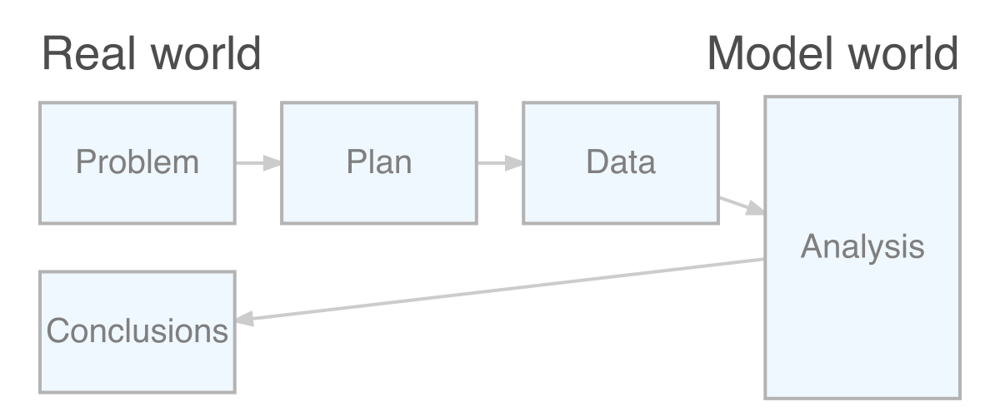

1.2 Some broad issues
It is worthwhile reflecting on some of the broad issues which have already arisen in our review of these examples of data. To structure our reflections it will be helpful to recall the PPDAC framework discussed in the Preface, displayed below in graphical form. In this section we will focus on the Problem, Plan and Data stages.

1.2.1 What’s the problem?
It is very important to define the objectives of an experiment clearly. Failure to do this will make subsequent analysis and interpretation very difficult. Pilot studies are a perfectly valid preliminary step but a clear objective is still needed. ‘Fishing expeditions’ are of rather limited use.
Our objectives will be informed by previous work so a review of the scientific literature is a wise start. Scientific knowledge of the subject domain will be very helpful not only in deciding what problem to tackle but also in informing later decisions in the planning process and in due course in interpreting the results of our analysis.
There are some general aspects of this process which are worth highlighting. The first is the distinction between an observational study where we simply observe and record variables of interest. We do not intervene or influence the situation in any way other by recording what we see. In an observational study we can only identify association between variables. A simple of example is the association between social or economic characteristics and political voting patterns.
In contrast, a designed experiment involves the specification of `treatments’ which are assigned by the experimenter. Rather than simply observe, we intervene. We are then interested in the way the treatments affect the outcome. If a designed experiment is conducted well it allows us to identify causal relationships between variables. A simple example is a clinical trial, such as the tuberculosis trial described in Section 1.1, where we compare the effects of different treatments on the recovery of patients suffering from a particular medical condition.
A second general issue is whether our aim is to understand the processes at work in our scientific context or whether we simply want to predict an outcome or design a system which will classify future observations into different groups. The classification of herring gulls into male and female groups discussed in Section 1.1 is an example of the latter. This is a case where we may not be primarily interested in which variables are involved in our model, simply in how successful our model is in prediction or classification. This may change our attitude to building a model, when the time comes, but it is also helpful to be aware of the distinction between these two aims from the start of the planning process.
1.2.2 What’s the plan?
Acquiring data which are appropriate, informative and unbiase requires careful thought. The ONS covid-19 survey was described in Section 1. Take a look at the methodology guide for this survey. It is very extensive, covering all the major issues which had to be considered.
One of the exercises at the end of this chapter ask you to consider how you might design a simple experiment to investigate the operation of short term memory, known to psychologists as “working memory”. How is a list of items recalled from memory? This is an experiment which can be caried out in a classroom or small group setting. It might surprise you just how extensive the list of detailed arrangements needs to be.
One of the important tasks is to identify which measurements should be taken. The list should include not only those which are mentioned in the definition of the problem being tackled but also those which we know or suspect from previous work or our scientific understanding are likely to influence the process we are studying. This will help us to consider an appropriate experimental design - a topic we will revisit in a later chapter.
1.2.3 Where do the data come from?
The diagram at the start of this section includes two headings, “Real world” and “Model world”. The question our experiment aims to tackle is about what is going on “out there in the wild”, even when the “wild” refers to a laboratory setting. If we consider all the observations we might ever make then we can view this as the population we are studying. The process of collecting a particular dataset then delivers a sample. Our modelling process will use this sample to try to understand what is going on in the population. It is then crucially important to obtain a sample which properly represents the population and does not suffer from serious bias. If we make serious mistakes at this stage, it is unlikely that we will be able to retrieve the situation.
A good mechanism for avoiding bias is to use randomisation. This applies in two ways. The first is to the process of identifying which items from the population are recruited into our sample, ideally ensuring that all potential items have an equal chance of appearing. The second applies to the allocation of any treatments to sampled items. The tuberculosis trial outlined in Section 1.1 is one of the first occasions where this was used. It is now a standard component of clinical trials worldwide.
1.2.4 Who do you trust?
We live in a world where ‘fake news’ has become a commonly used term. Not everyone is careful in the way data are collected, analysed and interpreted. Sadly, data are sometimes used selectively to support a conclusion already adopted. It is very important that this is countered and that the analysis of data is conducted in an honest and professional manner.
The UK Statistics Authority is the body which oversees the production of official statistics in the UK. Its code of practice is based on the principles of:
- trustworthiness, confidence in the people and organisations that produce statistics and data;
- quality, data and methods that produce assured statistics;
- value, statistics that support society’s needs for information.
The full code is well worth reading. Although it is couched in terms of official statistics, providing information for the public and for government, the principles it describes are very important. A Declaration on Professional Ethics is also provided by the International Statistical Institute.
In addition to the obligation on all who collect and analyse data to act with professionalism and integrity, specific ethical considerations arise in the planning and design of experiments, particularly those involving humans. Indeed, the protocol for any experiment involving humans must be approved by an appropriate ethical committee before it can be put into practice. A simple example is in a clinical trial to compare two treatments where the size of the sample must be considered very carefully. The sample must be large enough to enable a clear conclusion about the treatments to be reached, but if it is too large then some patients may end up being given a treatment which might clearly have been shown by a smaller trial to be inferior. That would not be ethical.
We will often find ourselves using data from other sources as part of our investigations. Indeed, many different sources are used in this book. The issue of trustworthiness, raised in the UK Statistics Authority code of conduct, again arises. What sources can we trust as reliable?
Some guidance comes from the source organisations stated aims and code of conduct. Reputation also matters. Open documentation is important, so that the details of the data collection process can be reviewed. Accountability matters too, so that there is a mechanism for query and complaint if the need arises.
The RSS has provided a document, Sound or suspicious? Ten tips to be statistically savvy which offers advice on how to assess claims that are made.